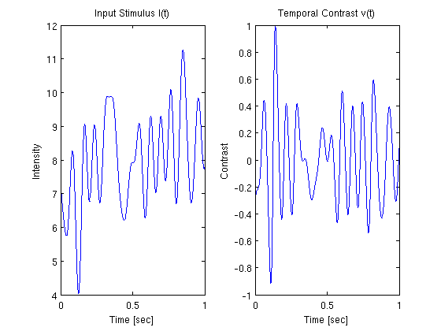
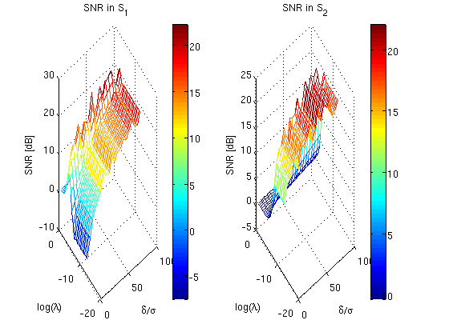
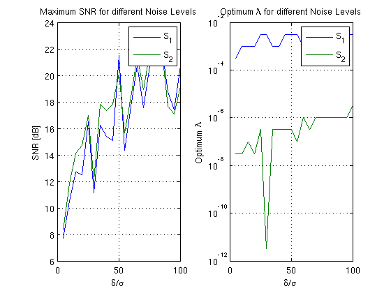

Time Encoding and Decoding of Temporal Contrast using a population of LIF neuron with Random Threshold
Performs the example presented in section 4.3.1 in [1]. The temporal contrast is encoded by a population of 4 LIF neurons and then recovered inside the Sobolev spaces S_1 and S_2. Different noise levels and smoothing paramters are tested Produces figures similar to figs. 5 & 6
[1] Aurel A. Lazar and Eftychios A. Pnevmatikakis, Reconstruction of Sensory Stimuli Encoded with Integrate-and-Fire Neurons with Random Thresholds, EURASIP Journal on Advances in Signal Processing, Volume 2009, 2009, Special Issue on Statistical Signal Processing in Neuroscience, doi:10.1155/2009/682930
Contents
Generate a Test Signal
Generate a signal 1 second long sampled at 0.1 MHz with a bandwidth of 15 Hz, and compute the temporal contrast
dt = 1e-5; fmax = 15; t = dt:dt:1; tr_vc = round(0.05*length(t)):round(0.95*length(t)); % truncated vector b_p = 8; mc = floor(floor(1/dt)*fmax*dt); % maximum sinusoidal components u = b_p + gen_test_signal(t(end)+(2*round(0.1*length(t)))*dt,dt,fmax,-Inf,mc); % a constant bias is added to the signal to ensure that it is positive u = u(round(0.1*length(t)):end-round(0.1*length(t))); % truncate first 100 values to eliminate discontinuities v = (diff(u)/dt)./u(2:end); % temporal contrast v = v/max(abs(v)); % normalize figure;subplot(1,2,1);plot([0,t],u) xlabel('Time [sec]'); ylabel('Intensity'); title('Input Stimulus I(t)') subplot(1,2,2);plot(t,v) xlabel('Time [sec]'); ylabel('Contrast'); title('Temporal Contrast v(t)')
Time Encoding and Decoding
Set parameters for neurons
N = 4;
b = [0.92,0.79,1.15,1.19];
delta = [2.94,2.61,2.76,2.91];
C = 0.01*ones(1,N);
R = [31.9,25.2,32.1,34.2];
tnr = 100:-5:5; % threshold to noise ratio
snr_in = 10*log10(tnr);
Perform time encoding with a series of noise level and time decoding in both S1 and S2 space with a series of smoothing paramters for each noise level
tki = cell(1,N); Nl = 25; % number of different values for the smoothing parameter lamda = logspace(-12,0,Nl); snr_s1 = zeros(length(tnr),Nl); snr_s2 = zeros(length(tnr),Nl); for r = 1:length(tnr) n = delta/tnr(r); for i = 1:N tki{i} = iaf_encode(v, dt, b(i), delta(i), n(i), R(i), C(i)); end v_s1 = LIF_pop_decode_S1(tki, t(end), dt, b, delta, R, C, n, lamda, N); v_s2 = LIF_pop_decode_S2(tki, t(end), dt, b, delta, R, C, n, lamda, N); for l = 1:Nl snr_s1(r,l) = 10*log10(sum(v(tr_vc).^2)/sum((v(tr_vc)-v_s1(l,tr_vc)).^2)); snr_s2(r,l) = 10*log10(sum(v(tr_vc).^2)/sum((v(tr_vc)-v_s2(l,tr_vc)).^2)); end clear TK; end
SNR of recovery in S1 and S2
figure;subplot(1,2,1);mesh(tnr,log10(lamda),snr_s1'); colorbar();
xlabel('\delta/\sigma'); ylabel('log(\lambda)'); zlabel('SNR [dB]'); title('SNR in S_{1}')
subplot(1,2,2);mesh(tnr,log10(lamda),snr_s2'); colorbar();
xlabel('\delta/\sigma'); ylabel('log(\lambda)'); zlabel('SNR [dB]'); title('SNR in S_{2}')
 Smoothing parameter value for maximum SNR in each noise level
figure;subplot(1,2,1);plot(tnr,max(snr_s1'),tnr,max(snr_s2'));
xlabel('\delta/\sigma'); ylabel('SNR [dB]');
title('Maximum SNR for different Noise Levels');
legend('S_{1}','S_{2}'); grid on;
for i = 1:length(tnr)
[ign,l1(i)] = max(snr_s1(i,:));
[ign,l2(i)] = max(snr_s2(i,:));
end
subplot(1,2,2);semilogy(tnr,lamda(l1),tnr,lamda(l2));
xlabel('\delta/\sigma'); ylabel('Optimum \lambda');
title('Optimum \lambda for different Noise Levels');
legend('S_{1}','S_{2}'); grid on;
 Author: Eftychios A. Pnevmatikakis
Copyright 2009-2012 Eftychios A. Pnevmatikakis